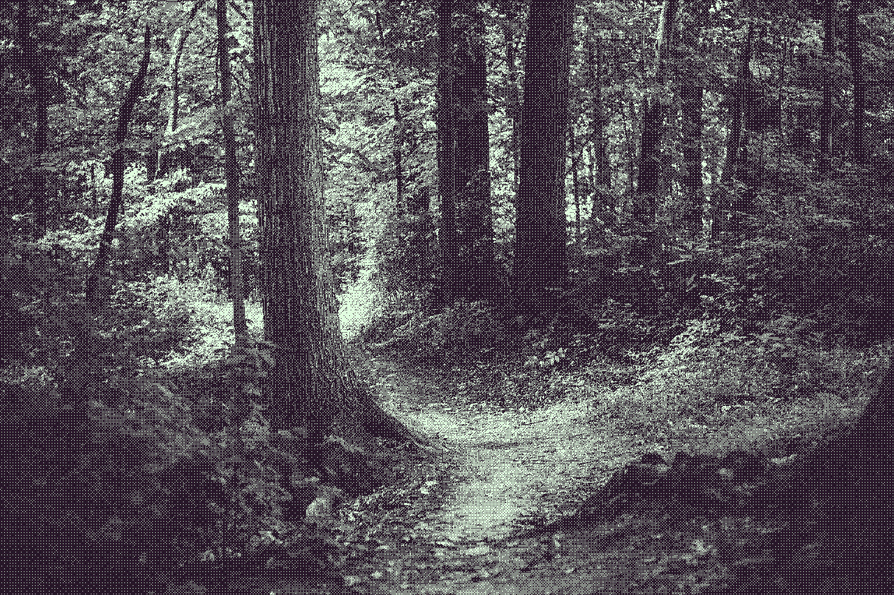
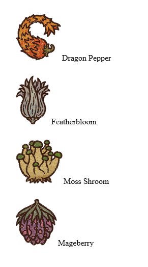
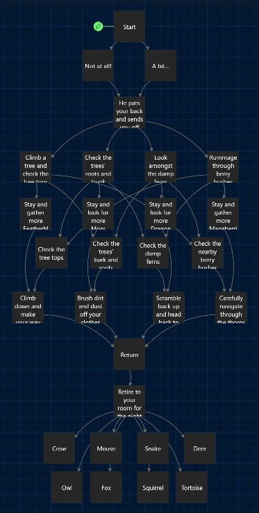
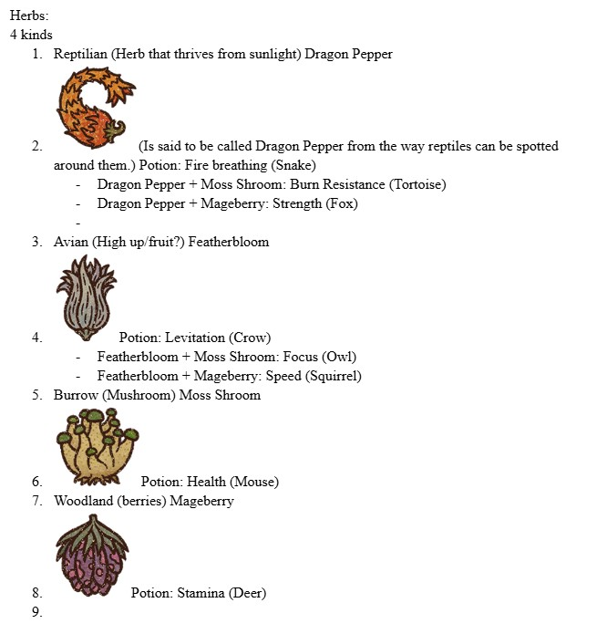
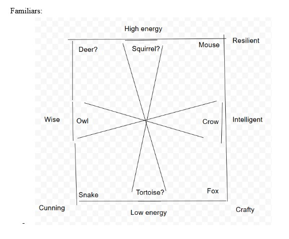

This is my choose-your-own-adventure/familiar personality quiz that I created with Twine! It is called Apothecary's Companion. I unfortunately got too ambitious and I didn't expect writing everything out to be this tedious so I don't have everything that I wanted to include, but it is finished.
Click to play

Here are the elements I have not included in the story yet.
This is the list that the mentor hands you in the adventure. (The ingredients are taken from the game Potion Craft. Check it out if you have the time and money. Highly recommend it, esp when its on discount.)

Here is what the general mapping of this adventure looks like on Twine.

This is the brainstorming I did for the type of potions you would create with the ingredients you picked while foraging

Here is what the general mapping of this adventure looks like on Twine.
This is the personality or character element I wanted to implement once your companion came to visit you. The mentor would've had a bit to say about your companion and how they are an apothecary's best friend as foraging specialists.
